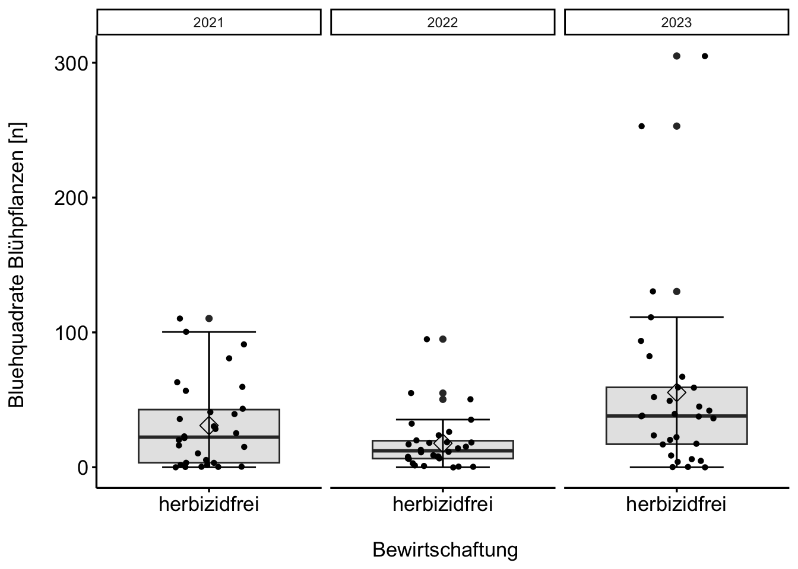
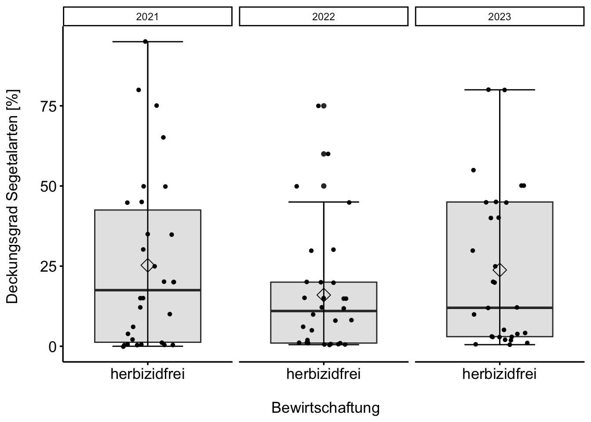
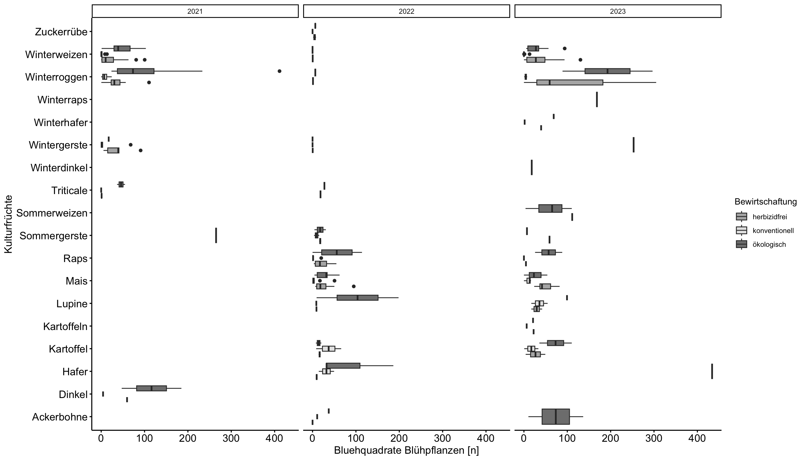

FINKA 2021-2023
Deckungsgrad_Segetalarten_prozent 2021-2023
Siehe Statistik

Bluehquadrate_Mittel_Blühpflanzen_n 2021-2023,
Interaktiv: Deckungsgrad der Segetalarten in [%] über alle Paare 2021 - 2023 (herbizidfrei)
Interaktiv: Bluehquadrate_Mittel_Blühpflanzen_n 2021-2023 (herbizidfrei)
Interaktiv: Deckungsgrad_Kultur_prozent 2021-2023 (herbizidfrei)
Interaktiv: Hoehe_Segetalflora_m 2021-2023 (herbizidfrei)
Interaktiv: Artenzahl_HNV_Kennarten_100_qm_n 2021-2023 (herbizidfrei)
Interaktiv: Artenzahl_HNV_Kennarten_100_qm_n 2021-2023 (herbizidfrei)
Interaktiv: Artenzahl_Plot_100_qm_Gräser_n 2021-2023 (herbizidfrei)
Interaktiv: Artenzahl_Plot_100_qm_Spontanflora_n 2021-2023 (herbizidfrei)
Übersicht: Bluehquadrate_Mittel_Blühpflanzen_n über alle Jahre und Kulturfrüchte
